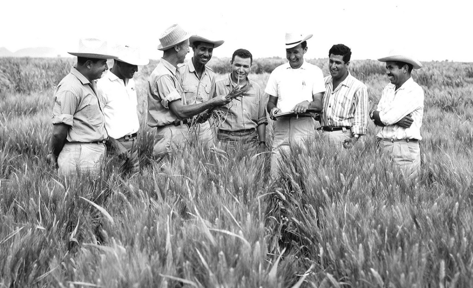

Dr. Norman Borlaug
The man who saved a billion lives

Dr Norman Borlaug, third from the left, trains biologists in Mexico on how to increase wheat yields - part of his life-long war on hunger.
Here's a time line of Dr. Borlaug's life:
- 1914 - Born in Cresco, Iowa
- 1933 - Leaves his family's farm to attent the University of Minnesota,
thanks to a Depression era program known as the "National Youth
Administration"
- 1935 - Has to stop school and save up more money. Works in the Civilian
Conservation Corps, helping starving Americans. "I saw how food changed
them", he said. "All of this left scars on me."
- 1937 - Finishes university and takes a job in the US Forestry Service
- 1938 - Marries wife of 69 years Marget Gibson. Gets laid off due to budget
cuts. Inspired by Elvin Charles Stakman, he returns to school study under
Stakman, who teaches him about breeding pest-resistent plants.
- 1941 - Tries to enroll in the military after the Pearl Harbor attack, but is
rejected. Instead, the military asked his lab to work on waterproof glue, DDT
to control malaria, disinfectants, and other applied science.
- 1942 - Receives a Ph.D in Genetics and Plant Pathology
- 1944 - Rejects a 100% salary increase from Dupont, leaves behind his
pregnant wife, and flies to Mexico to head a new plant pathology program.
Over the next 16 years, his team breeds 6,000 different strains of disease
resistent wheat - including different varieties for each major climate on
Earth.
- 1945 - Discovers a way to grown wheat twice each season, doubling wheat
yields
- 1953 - crosses a short, sturdy dwarf breed of wheat with a high-yeildling
American breed, creating a strain that responds well to fertilizer. It goes on
to provide 95% of Mexico's wheat.
- 1962 - Visits Delhi and brins his high-yielding strains of wheat to the
Indian subcontinent in time to help mitigate mass starvation due to a rapidly
expanding population
- 1970 - receives the Nobel Peace Prize
- 1983 - helps seven African countries dramatically increase their maize and
sorghum yields
- 1984 - becomes a distinguished professor at Texas A&M University
- 2005 - states "we will have to double the world food supply by 2050."
Argues that genetically modified crops are the only way we can meet the
demand, as we run out of arable land. Says that GM crops are not inherently
dangerous because "we've been genetically modifying plants and animals
for a long time. Long before we called it science, people were selecting the
best breeds."
- 2009 - dies at the age of 95.
"Borlaug's life and achievement are tesitmony to the far-reaching
contrbution that one man's towering intellect, persistence and scientific
vison can make to human peace and progress"
-- Indian Prime Minister Manmohan Singh
If you have time, you should read more about this incredible human being on his Wikipedia entry.